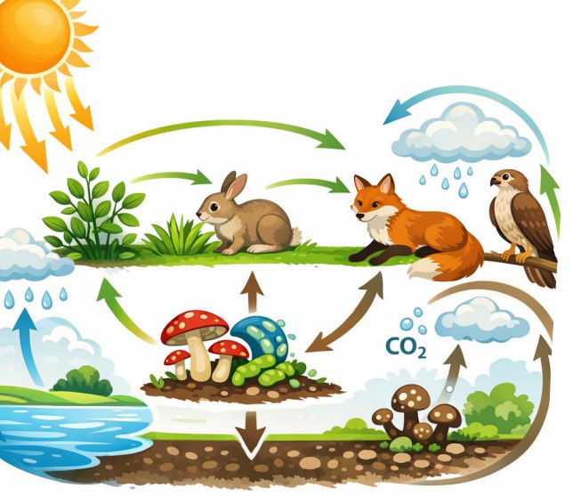
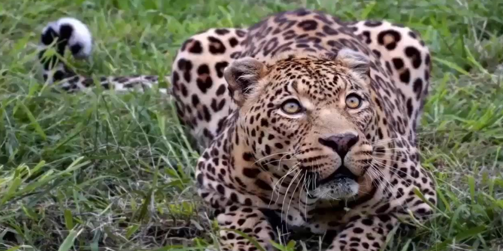
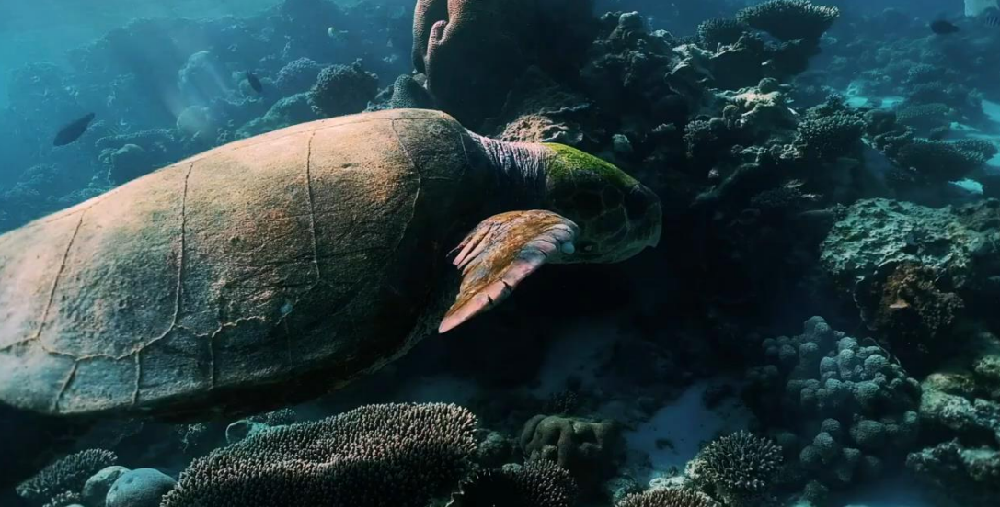

Bitácora – Fundamentos de Ecología

Ciclo ecológico y flujo de energía

Factores bióticos y abióticos

Adaptación y biodiversidad

Biodiversidad terrestre

Ecosistema marino
Ingeniería Civil con Enfoque en Sostenibilidad y Gestión Ambiental
Explorar ProyectoEstudiante de Ingeniería con experiencia en infraestructura vial, delineación técnica y levantamientos topográficos. Integración de principios ecológicos en proyectos de ingeniería civil.
Estudiante de Ingeniería con enfoque en análisis técnico, planificación territorial y gestión sostenible de recursos. Interesado en la aplicación de soluciones ambientales dentro del diseño y ejecución de obras civiles.
Ciclo ecológico y flujo de energía
Factores bióticos y abióticos

Adaptación y biodiversidad

Biodiversidad terrestre

Ecosistema marino
Principios ecológicos integrados en soluciones de ingeniería sostenible.
Este portafolio fue desarrollado mediante herramientas de Inteligencia Artificial para la generación de código, diseño visual, estructuración técnica y optimización de contenidos digitales.